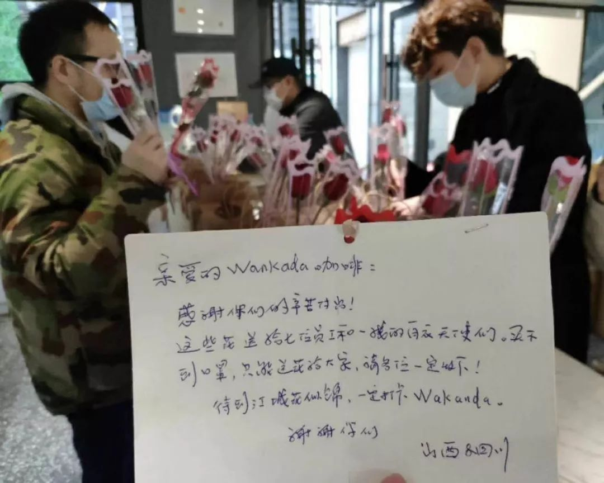
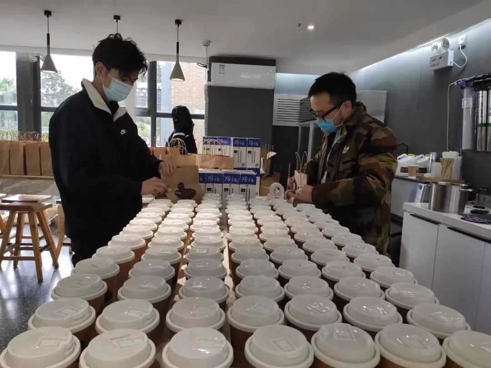
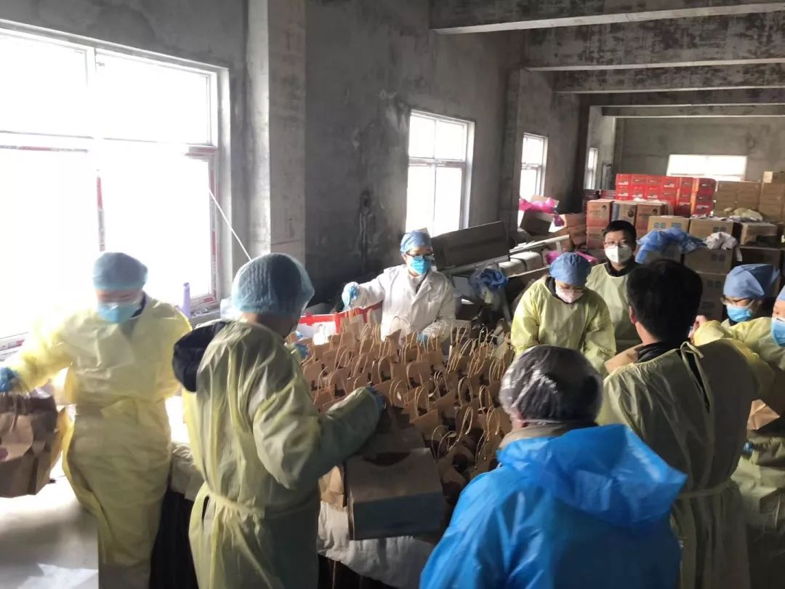
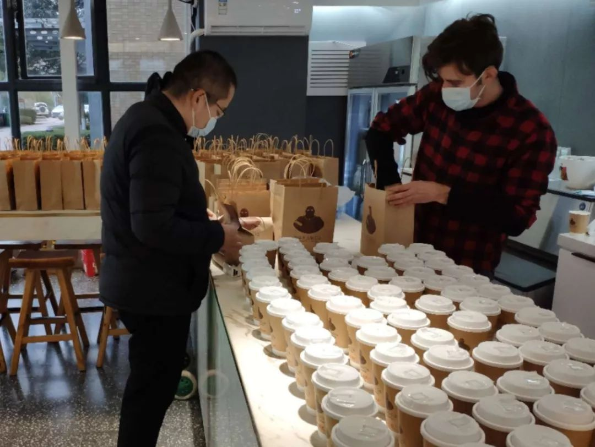

拯救武汉：实录封城后最艰难的三周 |《财经》封面
原文链接 备份链接 一座人口过千万的超级大都市在突降灾疫后陷入休克，然后艰难走出混乱无望 财经封面。创意设计/黎立 文 |《财经》特派武汉记者 刘以秦 信娜 王小《财经》记者 房宫一柳 黎诗韵 俞琴 王丽娜 王静仪 陈亮 李斯洋 李皙寅 …
***** *****
*****
*****Wakanda咖啡，一个在武汉刚刚成立一年多的咖啡品牌。**********在肺炎疫情蔓延武汉期间，它成为这座城市里唯一还在运营的咖啡馆。**********从武汉关闭离汉通道后的第三天起，他们已经为一线的医护人员免费送去了7850杯“武汉拿铁”。*****

Wacanda咖啡团队留守的七位咖啡师，年龄跨度从80后到00后，分别来自武汉、郑州和伊朗。受访者供图
文 | 新京报记者 解蕾
编辑｜胡杰 校对 | 翟永军
►本文约5510字，阅读全文约需11分钟

2月14日，情人节当天，武汉几家医院的一线医护人员收到了一份特殊的礼物，一杯咖啡，一支玫瑰，一颗巧克力。杯身上还有手写的祝福语。

情人节当天，咖啡馆收到了网友送来的玫瑰，请他们帮忙送给医护人员。受访者供图
这是Wakanda咖啡团队免费为一线医务人员送咖啡的第20天，从武汉关闭离汉通道后的第三天起，他们已经为一线的医护人员免费送去了7850杯“武汉拿铁”。在情人节这个特殊的日子里，Wakanda团队也特意准备了520杯咖啡和巧克力。玫瑰花是网友寄来的，字条上写着，因为买不到口罩，所以买来了玫瑰花送给白衣天使们。
Wakanda咖啡，一个在武汉刚刚成立一年多的咖啡品牌。在肺炎疫情蔓延武汉期间，它成为这座城市里唯一还在运营的咖啡馆。
这个团队由留守武汉的七位咖啡师临时组成，年龄跨度从80后到00后，分别来自武汉、郑州和伊朗。
随着媒体的报道，这支团队渐渐被大众所知晓，众多网友在社交媒体上为他们点赞。也有网友留言“待到江城繁花似锦，一定打卡Wakanda。”
面对突如其来的如潮好评，大家既兴奋又有些不知所措，作为队伍里两个80后之一的Echo说，“其实也没觉得自己多了不起，多么伟大，我们只是想做一件很酷的事。”
有的拼尽全力要回来，有的不愿离开

1月23日早晨，田亚珍被手机上的一则新闻推送惊到了：武汉市宣布将于今日10点关闭离汉通道。各大商城、餐饮、娱乐场所暂停营业。
90后姑娘田亚珍是武汉Wakanda轻饮咖啡的老板。就在两天前，随着春运返乡潮的开始，Wakanda咖啡馆已经关掉了武汉市内的五家分店，只有光谷店和汉街店还在营业。七家店的外地员工大多数也踏上了归途。
其实12月底田亚珍就对“不明肺炎”有所耳闻，但没放在心上。“封城”通告一出，这才真正意识到了事情的严重性。和咖啡馆的几个伙伴商量之后，田亚珍决定关掉汉街店，把那边的牛奶、咖啡豆等物资也拉回光谷店，至少先保住一家店，留守的人聚在一起也相互有个依靠。
Wakanda咖啡光谷店位于世界城光谷步行街，被各大高校包围，毗邻湖北省中医院、武汉市第三医院光谷院区和中南医院。学生党、上班族和医生护士构成了消费的主要人群，其中不少医护人员是咖啡的重度消费者。尤其是在夜里，店里总能接到许多来自医院的外卖订单。
1月24日，关闭离汉通道的第二天下午，咖啡馆来了两位戴着口罩的医护人员，他们是店里的老顾客。工作人员从他们口中得知，医院现在的工作量比之前突然增大了很多，疫情确实比想象中还要严重。
两位医生拿着做好的咖啡走出店门，看着他们离去的背影，大家心里有些不是滋味儿，“医护人员都这么辛苦了，还要亲自出来买咖啡。”
田亚珍说，当天晚上，几个人在店里开了一个小会。“不能在家坐以待毙。大家都痛快地决定了，给医护人员做公益咖啡！”
说干就干，一直是这个年轻团队的行事风格。田亚珍在工作群里发了一条信息，“谁要来光谷做咖啡，中午要送200杯咖啡给湖北省中医院的医生护士白衣天使们。”没有想到的是，留在武汉的小伙伴纷纷报名，远在成都旅游的小豪也表示要加入。而彼时武汉的疫情已经开始大面积暴发。
小豪是武汉人，00后，是这个七人团队里最年轻的咖啡师。
“武汉的小伙伴们都开始响应了，我想着成都离武汉也不远，然后也立刻响应。”大家都劝他不要回去，小豪却很坚持，“在这种时候，还是想和家人、小伙伴在一起。”
于是，在五百万人相继离开武汉后，逆着人潮，小豪踏上了艰难的返乡路。先是预订的25号航班因肺炎疫情被取消，后来他坐高铁到达潜江时，发现去武汉的高铁也被取消。最后家人从武汉开车去潜江接上了小豪。来回六个小时后，26日凌晨，小豪终于平安回到了武汉。
咖啡店的另一位伊朗咖啡师Sina也选择留在武汉，和伙伴们在一起。

员工们在专心准备咖啡。受访者供图
两年前，出于对中国的喜爱，27岁的Sina从伊朗来到了刚刚开业的Wakanda咖啡馆。Sina的主要工作是做咖啡和教新人做拉花，他做的拉花成为了店里咖啡的颜值担当。
2月2日，Sina接到了伊朗国家大使馆的消息，近日伊朗要派遣专机接滞留在中国的伊朗公民回国。而从疫情暴发以来，Sina远在伊朗的家人也一直希望他能尽快回国，店里的伙伴也在劝他回去。
几番思考后，Sina还是选择留在武汉。
“外国人可以离开武汉、离开中国，但中国人呢，他们有机会选择离开武汉、离开中国吗？他们不能，因为这是他们的家。而这里，现在也是我的第二个家。”
“在电影里我们看过许多拯救人类的超级英雄，但在真实的世界里，这些医生和护士就是超级英雄。”在一条朋友圈里，Sina写下了这句话，配图是一张给医护人员送咖啡的照片。
每天五百杯“武汉拿铁”送往医院
**
1月26日早晨九点半，田亚珍和三位咖啡师准时到达咖啡店。
数量是提前一天跟医院沟通好的，一天五百杯咖啡分上午和下午两批完成。一个医院的老顾客看到田亚珍在朋友圈里说想要免费为医护人员送咖啡，主动帮忙联系了医院，对方表示如果能喝到他们做的咖啡是件很幸福的事情。收到这个答复后，大家都特别激动。“有时候做公益不是说你想做就做了，也得看看人家到底有没有这种需求，不然好心办坏事，对医院来讲也是一种压力。”Echo说。
一天五百杯的量和平时差不多，但是医生们现在只有午饭和晚饭时间可以休息，所以必须要在这两个时间段内把咖啡送到医院。对Wakanda咖啡团队来说，这也是一场考验。
磨豆、压粉、萃取、打奶、打包配送，Wakanda的员工自动形成了一道流水生产线。采用和平时一样的制作工艺，省去耗时的拉花环节，其他保持不变。
上午批的三百杯咖啡要在一个半小时内制作完成。虽然时间紧迫，但既要保证速度，也要保证品质。为此，田亚珍之前做了很多细致的功课。比如，选用拿铁而不选用美式的原因是，美式咖啡除了提神也利尿，对于要穿着隔离服连续工作几个小时的医护人员来说极不方便。此外，做拿铁平时打奶的温度在55℃-65℃之间，口感和营养都是最佳的。但现在，他们把打奶的温度控制在80℃上下，保证这些咖啡送到医护人员手上时，还是温热的。
咖啡做好后，由Echo和段公子在12点前开车送达医院。

Echo和段公子，包揽了每天送咖啡的重任。受访者供图
Echo回忆，第一次送咖啡的时候，一靠近医院，不由自主地就安静下来。来来往往的救护车，全副武装的医护人员严阵以待，一条二百米的路要开两三分钟。“每次一进去就变得特别乖，像军人听到了军歌一样，那一幕对我们的冲击特别大。”
咖啡一般放在食堂门口的后勤部，那里集中放置着盒饭、水果等各种物资。放下咖啡，医院的志愿者全副武装地出来，等着他们隔开一定距离后，才把咖啡装车带走，送往住院部等地。
第三天，志愿者看到他们又来送咖啡了，其中有个志愿者阿姨，年龄稍大一点，眼眶像是有些泛红，突然就对他们鞠躬致谢。
后来小豪也跟着Echo去送过一次咖啡，刚好赶上五六个医护人员来取，交接完咖啡后，“他们五六个人突然就一起冲着我们鞠躬，我们有点不知所措，也给他们鞠躬，告诉他们注意身体。那个场景是我人生中第一次遇见，这辈子都忘不了。”
送到医护人员手里的每一个咖啡杯上都有田亚珍手写的祝福语，“医生最帅”、“护士最美”、“感恩有你”、“武汉加油”，让这一杯定制的咖啡带上每个咖啡师手间的温度。有时大家还会买些果汁、巧克力随咖啡送去。医护人员偶尔遇到，也会送他们半桶酒精。

志愿者把咖啡送去住院部等地分发。受访者供图
无法当面交流，不少医护人员都会在商家后台留言。“第一次喝到你们的咖啡是那天穿着防护服上完七个半小时白班，从早上八点一直没喝水没上厕所，回到科室第一件事，看到餐桌上摆了好多咖啡，立即打开一口气就干完一杯。”“为了照顾不喝咖啡的医护人员，贴心的你们还搭配了果汁。”田亚珍说，这些回复是对他们最大的鼓励。
随着疫情的持续蔓延，大家得知有很多医院的医护人员也被感染，有些都没有病床，甚至也不能回家自我隔离，只能住在医院，心里很难受。田亚珍做出一个决定，要为每天送去的“中国拿铁”改个名字，他们不想煽情，“武汉天使”、“武汉英雄”这些都太肉麻了，于是就直接改名为“武汉拿铁”，这是属于武汉人的咖啡，“我们用店里最宝贵的东西来纪念这些日子。”
“即使有一天店垮了，开不下去了，那最后一杯咖啡也一定是送到医护人员手里的。”田亚珍说。
来自全国各地的“云咖啡”
**
2月9日，Wakanda团队送咖啡的第15天，一篇在咖啡垂直行业媒体公众号上发布的文章，将这家低调的咖啡馆带到公众面前，文章迅速被转载，阅读量一夜破十万。
有人说这是“普通人的守望相助”，有人说他们是“城市的守护者”，更有许多网友表示“在疫情结束后，一定要去Wakanda打卡。”
但也有人说他们是在炒作。
忙着做咖啡的田亚珍和伙伴们并不知道他们已经成为了舆论的焦点。
第二天，先后有咖啡豆、牛奶的供应商打来电话，表示要捐助，田亚珍暂时婉拒了，表示店里目前物资还充足，而且武汉现在物流也不方便。之前他们每天早上会赶在一家生鲜超市开门的第一时刻，去扫荡当天需要的鲜牛乳。咖啡店的牛奶供应商在知道他们做公益咖啡后，主动捐赠了牛奶和鲜牛乳，一直对接的咖啡豆供应商也赞助了50千克的哥伦比亚咖啡豆。

来自伊朗的咖啡师Sina，不善言辞，但会把手中的每一杯咖啡都做到极致。受访者供图
2月11日早上，田亚珍发现不停有人通过微信和支付宝转账，“我退了他们又转，我再退。”大众点评上也突然多了一笔资金，还奇怪是哪里来的，后来发现是网友通过大众点评上的“买单”功能来付款的，大多数是20、30、50元这样的金额，也有500、1000元的，来自全国各地，甚至还有台湾的咖啡同行。后台的订单越来越多，留言也成百上千地增长。
原来，网友自发发起了一场线上买单的捐赠，希望通过网络下单请一线的医生护士喝到一杯热咖啡。被网友们所称的“云咖啡”就这样诞生了。
截止到2月15日晚，店里总共收到了13571笔订单，累计为Wakanda咖啡捐赠了163多万元。面对这个惊人的数字，大家都感到出乎意料的惊喜和感动，“心跳加速，背后像是涌来一股热气，在你身后站了几十万人似的。”Echo这样形容自己的感觉。
在此之前，田亚珍从来没想过会做到哪天。就是打算一直做下去，直到把七家店的物资都耗光为止。但现在看到这么多人说“不希望这么温暖的咖啡店倒闭”，他们决定尽最大所能坚持下去，满足广大网友的心愿，把“云咖啡”送到每一位医护人员手里。
现在店里每天都会记录订单收到的捐赠，“大众点评后台的统计功能很强大很透明，所有订单号都可以查到。”田亚珍说。除去购买咖啡原物料成本外，其余的资金会一直用来做咖啡，直到疫情结束的那天。所有剩余善款，他们会寻找最靠谱的基金会，成立武汉市医护人员专享基金武汉拿铁基金，全部捐赠给奋战在武汉抗疫一线的医护人员，并附上所有留有捐款名字的网友名单。
“特别感激，能拥有这么一群热血又善良的小伙伴”
**
2月17日，武汉大雪后的两天，气温很低，马路上依旧空空荡荡。经过联系，山东医疗救援队的医护人员也收到了Wakanda送来的“武汉拿铁”，热热的，捂在手里，像是回到了一个寻常的日子。一个医生捧着咖啡，在酒店里，自拍了一张，在朋友圈里写道：胜利之日，一定要去店里喝上一杯。
现在，Wakanda团队的免费咖啡已涵盖了周边的三家医院，驰援武汉的一些医疗队也开始联系他们送咖啡。每一杯咖啡上，除去祝福语外，还会写上捐赠的网友ID名字。
瞒着家里做咖啡的员工也瞒不住了，田亚珍的父母第一时间打来电话让她一定要注意防护，保护好自己。家里人明白，女儿决定做的事情，怎么劝也劝不住。
Sina留在武汉做咖啡的事情更是在伊朗国内走红。中国驻伊朗大使常华在社交媒体上公开为Sina点赞，Sina的父母看到新闻才知道真相，他们也被儿子的所作所为感动。“我家乡城市有很多人都跑去告诉我妈妈，他们在新闻里看到我在中国所做的事情了，他们特别为我而骄傲。”
Sina来武汉两年了，他说自己从来没有见过这样的武汉。2月7日晚上，他坐在房间里，听到窗外有人喊“有没有人”，“还有吗？”从另一栋楼里传出“有”，此起彼伏。 然后他们开始喊“武汉，加油，武汉加油。”其中还有小孩子的声音，他当时几乎要流出眼泪来，“那一刻我被震撼到了，那些声音里带着一种特殊的情感，它们那么动人，那么美丽，成为我生命里最美妙的一次经历。我会永远记住那个夜晚。”
像许许多多的武汉人一样，大家也都在祈祷，希望疫情尽快结束。
武汉土著小豪说，疫情结束的那天，他一定要去吃一碗过早的热干面。
Sina说疫情结束之后，他要好好休息一下，如果钱攒够了就开启一段遥远的旅行。
田亚珍没有认真想过疫情结束后会做什么，只想做好每天的事，把“武汉拿铁”送到更多的医院去。她现在比以前更爱身边的朋友们了。“特别感激，能拥有这么一群热血又善良的小伙伴。”
在最新的咖啡日记里，她写下了这样一段话：每天在去医院送咖啡的路上，我们看到农民把自己种的菜直接拉到医疗队，小饭馆的老板为医护人员送几百份饭菜，在国外旅行的人直接把一箱箱口罩背回来送到医护人员手里，我们见到了很多抗疫时期的“逆行者”。我们只是做了我们该做的事情，只是一个中国人该有的样子罢了。
*洋葱话题*
*▼*
*****你想对逆行者们说什么？*****
*后台回复关键词*****“洋葱君” ，加入读者群****
***推荐阅读***

荆州第一例危重症新冠患者的生死十六天

支援医院的武汉环卫工：每天处理300桶垃圾


*********既然在看，就点一下吧****** *********
*********
原文链接 备份链接 一座人口过千万的超级大都市在突降灾疫后陷入休克，然后艰难走出混乱无望 财经封面。创意设计/黎立 文 |《财经》特派武汉记者 刘以秦 信娜 王小《财经》记者 房宫一柳 黎诗韵 俞琴 王丽娜 王静仪 陈亮 李斯洋 李皙寅 …
原文链接 备份链接 澎湃新闻综合报道 新冠疫情发生以来，为了方便沟通交流，医护人员在背后写上名字，互相打气。 这些防护服上的字，如无声的誓词。 我们虽然看不见你们的脸庞，却从这些字里看到了希望。 “此行是为救治病人，不达目的不撤兵”——她 …
原文链接 备份链接 同力协契 共克时艰 武汉“封城”已三周，新冠肺炎全国感染人数还在持续上涨。 所有人都在期待拐点的到来，无数白衣天使依旧坚守在抗击疫情第一线，一刻不敢松懈。社会各界也在通过各种方式参与到这场没有硝烟的抗疫保卫战里。 这 …
原文链接 备份链接 *************▲*************2月4日，医护人员将患者转运至武汉火神山医院病房。 （新华社记者 肖艺九/图） 全文共7126字，阅读大约需要14分钟。 火神山医院从开工到交付使用，只用了大 …
原文链接 备份链接 澎湃新闻记者 陈雷柱 通讯员 黄启秀 除夕之夜，空军军医大学子弟兵千里驰援武汉，半个多月过去了，这个特殊的春节已经过完，他们昼夜奋战一线，留下的，除了病房里忙碌的身影，还有，属于他们内心“自留地”的朋友圈。 澎湃新 …